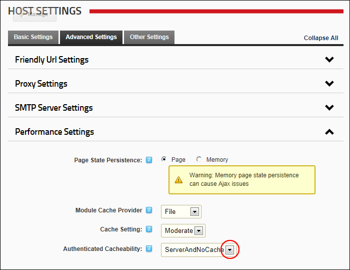

Setting Authenticated Cacheability
How to set the Cache-Control HTTP header value for authenticated users.
- Navigate to Host >
 Host Settings.
Host Settings.
- Select the Advanced Settings tab.
- Expand the Performance Settings section.
- At Authenticated Cacheability, select from these options:
- NoCache
- Private
- Public
- Server
- ServerAndNoCache
- ServerAndPrivate

-
Click the Update button.